Click a highlighted definition to read it here without losing your place. Follow section numbers alongside the original PDF.
Chapter cheat sheet
Main idea, definitions, and solving steps
The main idea: Build a complete functional interpreter by extending values and evaluation rules consistently across all constructs.
| Key term | Concise meaning |
|---|---|
| Unit | The single result used when a computation has no informative return value. |
| List value | A sequence of values; NIL is empty, CONS adds a head. |
| Operand contract | The value shapes an operation accepts, such as integers for arithmetic. |
| Mutual recursion | Each function body can call every function in the recursive group. |
| Sequencing | Evaluate the first expression for its effect, then return the second expression’s value. |
Rule to remember: PRINT e evaluates e, emits output, and returns Unit. SEQ(e1,e2) returns the value of e2 after e1 finishes.
Small example: PRINT 3 followed by 4 emits 3 and returns 4; the emitted text and the returned value are different results.
How to solve problems:
- Group constructors by data, operations, bindings, and effects.
- Evaluate operands in the specified order.
- Check their shapes before applying an operation.
- Test empty lists, invalid shapes, recursive cross-calls, and output order.
Common trap: Unit is not the empty list. Do not silently replace the toy language’s equality rule with OCaml’s generic equality.
Read the chapter in the original PDF · Continue to the detailed sections
Syntax and code companion
Use the syntax reference to trace a symbol to its meaning and source. Integrated lecture practice: Lecture 3 · Lecture 4 · Lecture 6.
Lists, cons, and tuples · Patterns and recursive cases · Functions and application
Line-by-line code · List construction and pattern deconstruction
Complete OCaml teaching example supporting the Fun list extension
let rec map f xs =Accept a transformation and a list.
match xs withSelect the list case.
| [] -> []Empty input gives empty output.
| h :: t ->Deconstruct the input.
let mapped_head = f h inTransform the head first; the explicit let specifies this order.
let mapped_tail = map f t inTransform the remaining elements.
mapped_head :: mapped_tailConstruct the result with cons.
Trace result: map (fun n -> n + 1) [1;2] = [2;3]. Implementing the course Fun AST still follows its own semantics.
Before you begin
Read in the PDF: Chapter 5, pp. 147–160. Goal: combine familiar rules into a larger functional interpreter. Definitions: closure, environment, call by value.
5.1 Syntactic Structure
Fun adds unit, boolean constants, lists, multiplication and division, comparison, boolean negation, mutually recursive definitions, output, and sequencing. The useful way to read this larger grammar is in families: data, operations on data, binding and calls, and effects that impose an order.
Unit is the single value used when a computation has no informative result. An empty list is a different value. The syntax constructor NIL creates a list; ISNIL tests one; HEAD and TAIL require a nonempty list. Each operation has its own contract.
5.2 Semantic Structure
Extend the value domain to Unit, integers, booleans, lists of values, ordinary closures, recursive closures, and mutually recursive closures. An untyped evaluator's list can contain different value shapes; the homogeneous-list type discipline arrives later, in Chapter 8.
For CONS(a,b), evaluate a to a value and b to a list, then prepend. For append, both values must be lists. Arithmetic requires integers. The book's equality cases compare two integers or two booleans; using OCaml's generic structural equality on all values would silently add other cases, including inappropriate procedure comparisons.

View Mermaid source
flowchart TD
accTitle: Chapter 5 - evaluate operations only when their value shapes match
accDescr: Constructor dispatch determines the expected shapes; invalid shapes produce an explicit undefined-operation error.
A["Inspect expression constructor"] --> B["Evaluate required operands in order"]
B --> C{"Operand shapes satisfy the rule?"}
C -->|Yes| D["Construct the specified result"]
C -->|No| E["Report a runtime error"]
D --> F["Lists remain values; procedures remain closures"]
Mutual recursion
Both definitions must be available in either function body. Keep the pair's definitions and their shared outer environment together. Calling even reinstalls even and odd, then its parameter; calling odd performs the corresponding operation with odd as the selected body. Installing only the called function makes the first cross-call fail.

View Mermaid source
flowchart TD
accTitle: Chapter 5 - trace mutually recursive parity functions
accDescr: Every call sees both functions; decreasing the argument alternates between even and odd until a base case is reached.
A["Install even and odd together"] --> B["even 3"]
B --> C["odd 2"]
C --> D["even 1"]
D --> E["odd 0"]
E --> F["false"]
PRINT e first evaluates e, emits its representation, and returns Unit. SEQ(a,b) evaluates a for its effect, then b for the final result. Explicit let bindings in the interpreter enforce the intended left-to-right operand order; relying on the host language's argument evaluation order is unsafe.
5.3 Implementation
Read in the PDF: pp. 156–160. Task: implement run : program -> value for all listed constructors.
Download the complete Fun solution. It covers the entire listed syntax and has an injectable output function, making print order testable without reading console output by eye. It reports invalid shapes, empty-list operations, division by zero, and unbound names with Runtime_error.
Worked solution: reverse
The recursive reverse program in the PDF checks for an empty list. Otherwise it reverses the tail and appends a singleton containing the head. On [1;2;3]:
reverse [1;2;3]
= reverse [2;3] @ [1]
= (reverse [3] @ [2]) @ [1]
= (([] @ [3]) @ [2]) @ [1]
= [3;2;1]
At each step, HEAD and TAIL occur only in the nonempty branch. Evaluating both IF branches would wrongly apply them to NIL at the base case.
Worked solution: output loop
The factorial example defines a recursive numeric function and a second recursive procedure that prints successive results while decreasing its counter. PRINT's result is discarded by SEQ; the terminal branch returns Unit. The list-producing example on p. 160 returns descending integers because it conses n before the result for n−1. Follow the constructor order rather than assuming a function named range must ascend.
Check before continuing: even(8) is true, odd(8) is false, reversing three elements preserves all three, an invalid equality is rejected, and a print sequence preserves output order.
Homework connection: HW2 uses a closely related language with its own supplied names and specification. The textbook solution does not replace that handout's contract. Next: Chapter 6.